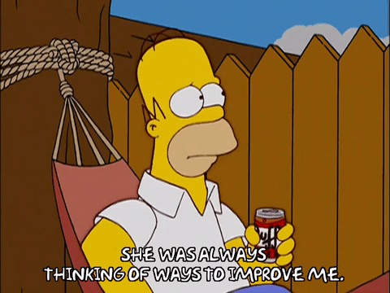

We defined close with Levenshtien distance < 0.5.
Data Gathering & Management
Final Task
The Data
230 million records from bus sensors within Dublin, between July 2017 to September 2018.
Extract, Transform, Load.
Apache Spark™ as processing framework.
We’ve filtered records that doesn’t correspond with a specified route (line @ station).
An additional feature was added,
direction, which specifies the direction of movement (slope).All the data was loaded onto Elasticsearch 💙 cluster.
Uncertain data
Our task is to shed some light over the data uncertainty.
busStop & atStop are both prime suspects.

Uncertain, Real-Time
We intend to estimate the true location of a bus stop, from the observed data.
While reading a stream, we will fix
busStopto the closest station (which is on-route).After each batch, we will update our estimations with the new data.
To avoid extra noise - we will set
atStopto all reports within50 metersfrom it’s fixed station.
Estimations
For all estimations, we’ve used only reports with atStop = True.
Simple centroid
K-Means
UK-Means (line-moving)
UK-Means (free-moving)
K-Means adaptation
The data is very dense.
→ bus reports near stations that aren’t on their route.
Instead of restricting K-Means algorithm, we will partition the data by JourneyPatternId.
This will allow convergence only to stations along the route.
UK-Means
Following our presented article:
(Uncertain Data Mining: An Example in Clustering Location Data)
We’ve implemented Uncertain data clustering algorithm, which targets moving object uncertainty.

UK-Means adaptation
Line-moving uncertainty:
We’ve used the calculateddirectionat eachatStopreport as the line’s slope.
The length was determined as50 meters.Free-moving uncertainty:
The radius was defined to50 meters.
underlying assumption is uniform distribution around the centroid.
YOU CAN’T HANDLE THE TRUTH!
These are not the droids you are looking for…
But, how can we REALLY know?

To evaluate our predictions, we’ve accessed RTPI API service to collect the true location of each bus stop in our data.
Textual Data Integration
We’ve used “HERE Maps” REST-API to reverse geocode (coordinates → street address) all
atStopobservations from the data (50 million).Then we’ve added (from RTPi) all the bus stations names, both in English & Gaeilge (Irish).
We plan to calculate the distance between the reported bus station name, and the actual street address derived from the coordinates.
Text Distance
We used Levenshtien distance (normalized) to calculate the distance between names (street, bus station).
Levenshtein distance between two words is the minimum number of single-character edits (insertions, deletions or substitutions) required to change one word into the other.
Levenshtien On Data

Improve the prediction

These are not the droids you are looking for
We will use Levenshtien distance to filter all observations which are not close enough to its reported bus station.
Results
| Task 3 | Task 4 |
|---|---|
0.10125 | 0.2739 |
Textual Analysis
Name vs. Location
Following our prediction task, we were interested in the relation between the textual & spatial distance.

Gaeilge vs. English names
Following our article presentation (GNMT), we were interested wether bus stations names have some similarity between English & Gaeilge (Irish).